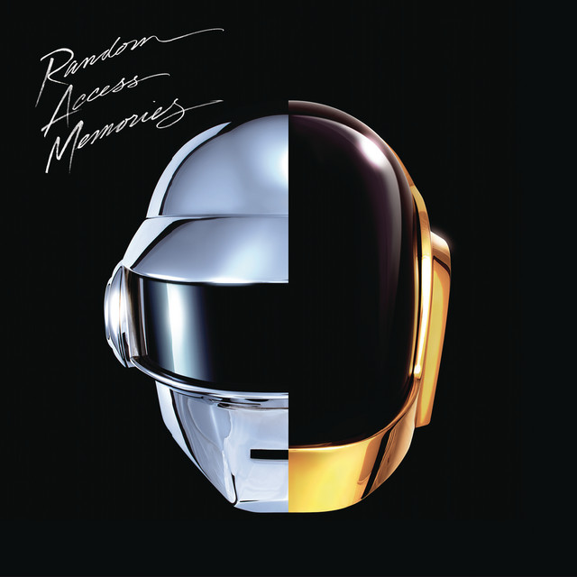

Ingredients List
- Give Life Back to Music - 4:35
- The Game of Love - 5:22
- Giorgio by Moroder - 9:05
- Within - 3:49
- Instant Crush (feat. Julian Casablancas) - 5:38
- Lose Yourself to Dance (feat. Pharrell Williams) - 5:54
- Touch (feat. Paul Williams) - 8:19
- Get Lucky (feat. Pharrell Williams and Nile Rodgers) - 6:10
- Beyond - 4:50
- Motherboard - 5:42
- Fragments of Time (feat. Todd Edwards) - 4:40
- Doin' it Right (feat. Panda Bear) - 4:11
- Contact - 6:24
Taste Our Coffee Here: